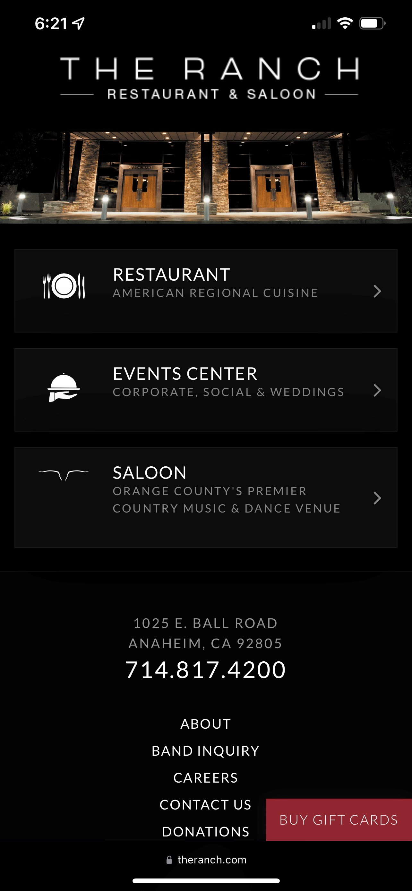

Contrast
The Ranch Restaurant and Saloon
theranch.com This site has great contrast. A black background with white text really grabs and keeps our attention. This is a dynamic site that is easy to look at. The sample sans-serif fonts make text easy to read against the background.
Repetition
YouTube
m.youtube.comYoutube is the king of repetition. Everything looks the same no matter how far you scroll you will see the same format. This repetition makes for easy continuous scrolling.
White Space
Google is the ruler of white space! They use minimal objects on their page to direct the user to focus on the search function. Keeping a clean and clutter free page makes it very user friendly and easy to look at.